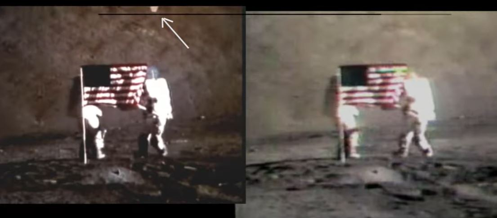
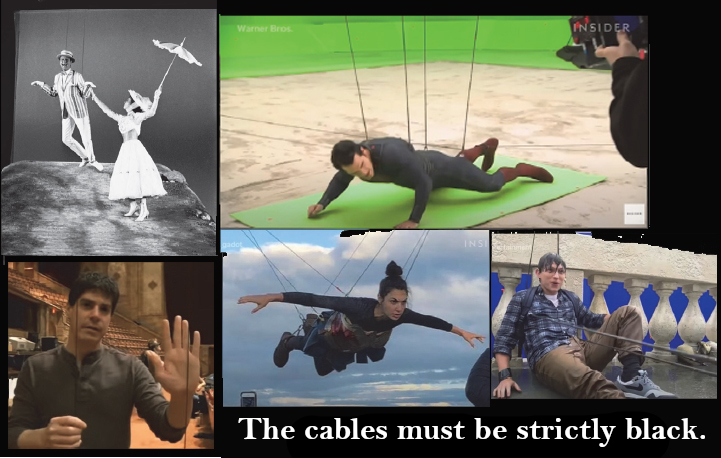
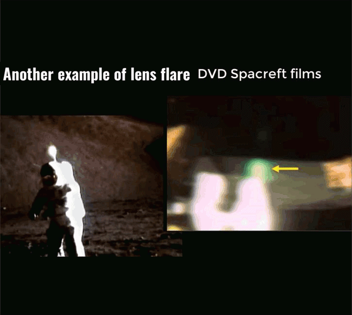
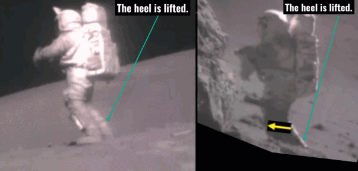
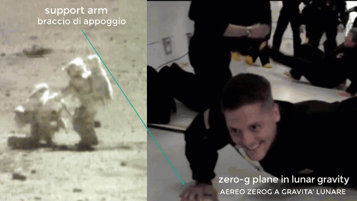
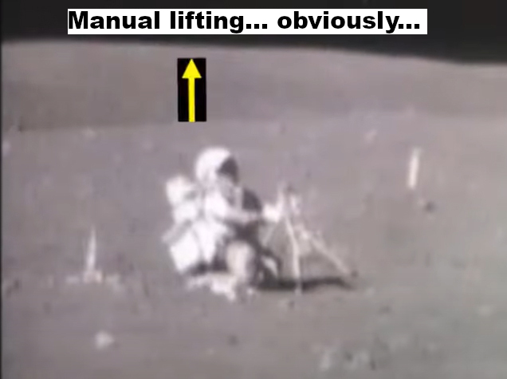
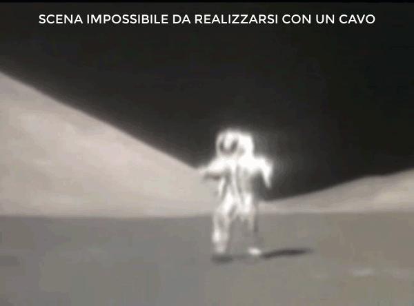
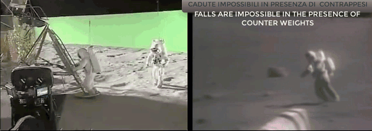

21 - Given that these are not artifacts from video conversion, nor are they glares inside the lens, can you explain what these flashes of light sometimes appearing over the head of the astronauts actually are?
Once again, the question makes unfounded claims. Flashes of light do not occur "every now and then" but only in two cases out of dozens of hours of footage and now we will explain them. The frame where the first flash of light is seen, is this. We see it below compared with the image taken from the NASA servers.

The light is only in the footage taken from the DVDs of Spacecraft Films. What would be the hypothesis? That the light was a reflection produced by a reflective cable from which the astronaut was hanging, a reflection that escaped control by NASA and was erased only after the release of the Spacecraft Films DVDs? I'm sorry, but this hypothesis is not only absurd, but thought by those who have been the director is even delusional. But doesn't the director know that since the cables to lift actors in theaters or cinemas have existed, they are strictly black, and would they ever have produced a reflection as we see in the frame? Here we put images where you can see that in movies, from the time of Mary Poppins to the present day, the cables that lift the actors are black and never shiny and reflective.
Even the example that the documentary brings as a flash produced by the cables, is absolutely not a flash! Let's put this gif and show that there is no flash on the set of 'Magnificent Desolation', but only a light that illuminates the black cable in a persistent way and that would never have escaped a direction. On the Moon, with a perpetually coal-black sky, only a madman would have put shiny reflective steel cables in place of the black ones that would have perfectly camouflaged themselves with the lunar sky, for this reason the mere supposition that that light could be a reflection of a shiny cable is, I repeat, delusional. But then what was that little light?
It should be noted from the images compared that while the NASA footage has a correct lunar color, on the other hand, the images to the left of the comparisons, which are those taken from the SCF DVD, have a "Martian" red color. Why this difference? Because the footage used by the SCF was taken from "copy" films that NASA produced for universities and research centers that wanted to analyze lunar footage. Since in the 70s videotapes or DVDs with which to share television films did not yet exist, NASA made duplicates on film using a device called kinescope, which shot television images on film, synchronizing the frames.
These films could be shared without affecting the original magnetic tapes. Of course, since they were not originals but copies produced in many copies, they were not preserved with particular care, and having been screened who knows how many times, already at the beginning of the 2000s, when the Spacecraft Films DVDs were produced, they showed all their signs of wear. Here we put a series of images > with only a part of the damage of the kinescope video used by the SCF and on the right the same images taken from the originals of NASA without these defects.
On the Moon, with a perpetually coal-black sky, only a madman would have put shiny reflective steel cables in place of the black ones that would have perfectly camouflaged themselves with the lunar sky, for this reason the mere supposition that that light could be a reflection of a shiny cable is, I repeat, delusional. But then what was that little light?
It should be noted from the images compared that while the NASA footage has a correct lunar color, on the other hand, the images to the left of the comparisons, which are those taken from the SCF DVD, have a "Martian" red color. Why this difference? Because the footage used by the SCF was taken from "copy" films that NASA produced for universities and research centers that wanted to analyze lunar footage. Since in the 70s videotapes or DVDs with which to share television films did not yet exist, NASA made duplicates on film using a device called kinescope, which shot television images on film, synchronizing the frames.
These films could be shared without affecting the original magnetic tapes. Of course, since they were not originals but copies produced in many copies, they were not preserved with particular care, and having been screened who knows how many times, already at the beginning of the 2000s, when the Spacecraft Films DVDs were produced, they showed all their signs of wear. Here we put a series of images > with only a part of the damage of the kinescope video used by the SCF and on the right the same images taken from the originals of NASA without these defects.
 Now it is clear that this flash of light, like all the others shown, is just a defect/artifact in the film due to wear.
The second case shown by American Moon has a different genesis, in fact the reflection also appears in NASA servers. But that reflection is nothing more than a lens flare effect that is produced when the reflection of the antenna (the one made of shiny reflective metal) reached maximum intensity, producing reflection effects inside the camera lens. Here we put a gif where the second case is compared with another similar effect taken from NASA footage and which can only be an obvious lens flare effect determined by the reflection of the sun on the antenna.
Now it is clear that this flash of light, like all the others shown, is just a defect/artifact in the film due to wear.
The second case shown by American Moon has a different genesis, in fact the reflection also appears in NASA servers. But that reflection is nothing more than a lens flare effect that is produced when the reflection of the antenna (the one made of shiny reflective metal) reached maximum intensity, producing reflection effects inside the camera lens. Here we put a gif where the second case is compared with another similar effect taken from NASA footage and which can only be an obvious lens flare effect determined by the reflection of the sun on the antenna.

As we can see, the two examples have the same behavior: an additional light that appears above the antenna only at the moment of maximum brightness of the reflection. In the image from American Moon, in addition to the added reflection, other distortions are produced on the landscape at the same time, a clear sign that it is a lens flare effect.22 - Can you explain how is it possible to make a movement such as this one... this one... or this one, without some kind of external force pulling you upwards?
The answer is absolutely yes, and you don't have to go to the Moon to understand it, just go on a Zero G plane at the established moments when the plane emulates lunar gravity. However, let's start with the case considered most striking, this one.

As we can see, the astronaut simply puts himself on the tip of his boots to lift the camera lens, the only way to have shots that point upwards. The Moonwalk is all in the author's imagination, as is the supposed cable that should support the astronaut. Here, however, a jump on the ladder, mistaken for a phenomenon of levitation. Here is an example of a one-arm moonlift and one in a ZeroG plane:
Here is an example of a one-arm moonlift and one in a ZeroG plane:
 Here is another example of lifting with a single arm at 1/6 of the weight.
Here is another example of lifting with a single arm at 1/6 of the weight.

Here then, American Moon would portend a manual lift and not a fixed counterweight for the actor astronauts, we see it in this image where an astronaut would seem to be waiting for a lift, which at that point can only be manual.
But that type of manual lifting would be totally incompatible with jump runs as we see in this second image below, as those who lift the astronaut to take 5/6 of the weight off him by pulling the cable, cannot simultaneously give him the cable to advance. If the astronaut jumped from a standstill, it would be possible to lighten him, but if he starts running it is impossible, because you would have to constantly give him a cable and if you tried to lighten him by pulling the cable, you would immediately unbalance him by making him fall backwards.
In the event that the astronaut on the other hand had a rail support that moved at the same speed as him and that lifted it with a counterweight (an artifice made on the set of Magnificent Desolation and which we see in the image below), the presence of the counterweight would not have allowed the astronaut to lie down even for a second, and the rail would not allow it to cross and make U-turns, which the Apollo astronauts did with great ease.
In the case of lifting with a helium balloon, (a stratagem used by Tom Hanks) the astronaut would not have been able to run and even less fall, given the towing and braking that the balloon would have produced in movement. Here we see the difficulty in the movements of his actors in From the Earth to the Moon. It can be deduced that in order to fall the astronaut actors would have had to have a "manual" lift, but in doing so they would not have been able to move easily and even less run by jumping, as the lifters would have had to move running following the astronaut's movements, risking to enter sooner or later in the filming.
On the contrary, a mobile and remote-controlled track system with constant counterweight would have guaranteed a vertical lift for movements parallel to the track, but would have prevented both sudden lateral movements, crossings between astronauts and above all falls with the astronaut staying several seconds on the ground.
From this it can be deduced that to date there is no mechanical system of partial lifting (not to be confused with total lifting, much easier to obtain as a cinematographic effect) that allows astronauts to make simultaneously: movements in all directions, jumping runs, falls with permanence on the ground, crossings between astronauts and all at 1/6 of constant gravity. Cinematography, starting with 'Magnificent Desolation' (whose astronauts do not fall, do not jump, do not run, and above all do not cross each other but travel straight stretches) and even more so subsequent cinematography, has shown us this.
It can be deduced that in order to fall the astronaut actors would have had to have a "manual" lift, but in doing so they would not have been able to move easily and even less run by jumping, as the lifters would have had to move running following the astronaut's movements, risking to enter sooner or later in the filming.
On the contrary, a mobile and remote-controlled track system with constant counterweight would have guaranteed a vertical lift for movements parallel to the track, but would have prevented both sudden lateral movements, crossings between astronauts and above all falls with the astronaut staying several seconds on the ground.
From this it can be deduced that to date there is no mechanical system of partial lifting (not to be confused with total lifting, much easier to obtain as a cinematographic effect) that allows astronauts to make simultaneously: movements in all directions, jumping runs, falls with permanence on the ground, crossings between astronauts and all at 1/6 of constant gravity. Cinematography, starting with 'Magnificent Desolation' (whose astronauts do not fall, do not jump, do not run, and above all do not cross each other but travel straight stretches) and even more so subsequent cinematography, has shown us this.
« PreviousNext »
Chapters:
IIIIIIIVVVIVIIVIIIIXXXIXIIXIII